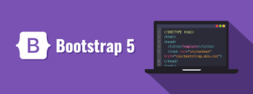

How to Install Bootstrap!
Installing a PHP-based web application cheat sheet
PHP Installation
To start using PHP...
- Find a webhost with PHP and MySQL.
- PHP is short for Hypertext Preprocessor. In short terms, it is a type of scripting that allows people to make complex web pages. Using a PHP allows pages to be complex and interactive!
- MySQL is a database application that is based on SQL which stands for Structured Query Language. It is used on the web and can be used for small or large applications.
- The combination of these two creates a platform that can be crossed. To find a PHP server with a MySQL Database, you can visit a free website at: http://www.mysql.com
- Once you feel comfortable with these concepts, find a server that you like best and pair it with your PHP! A few options to consider would be Joomla, Wordpress, or Bootstrap.
- This video will show you a tutorial on PHP & MySQL-Connecting Databases
- Let's learn what is Bootstrap and how to install it!

- Bootstrap is an advanced framework which allows for development. Bootstrap is a whole collection of CSS, HTML, and Javascript
- What is CSS, HTML< and Javascript?
- They are the languages that run the web!
- CSS- formatting that helps marked up content
- HTML- adds meaning, the file you save to start your site
- Javascript- helps make content and creates interactive formatting
- Bootstrap Components
>drop down menus
>navigation bars
>embedded images
>Some much more to explore, SEE FOR YOURSELF!
Now that you understand Bootstrap, here is how you install it! Go to Google and just type Bootstrap in the search bar. The first link that shows up is what you are looking for!
(http://www.getbootstrap.com)
The homepage will be opened once you click the link. A button centered in the screen will say "Download Bootstrap"
CLICK THAT!!!! YOU'RE ALMOST THERE!!
You will then download it in a zip file format. Add this to your desktop. Double click the file, and inside the file you will see all of the compiled CSS and Javascript folders.
To begin your website, you will insert all of your code into Sublime! Save this file as index.html in a designated folder.
You can then begin to customize your website with custom codes found on https://getbootstrap.com/docs/5.1